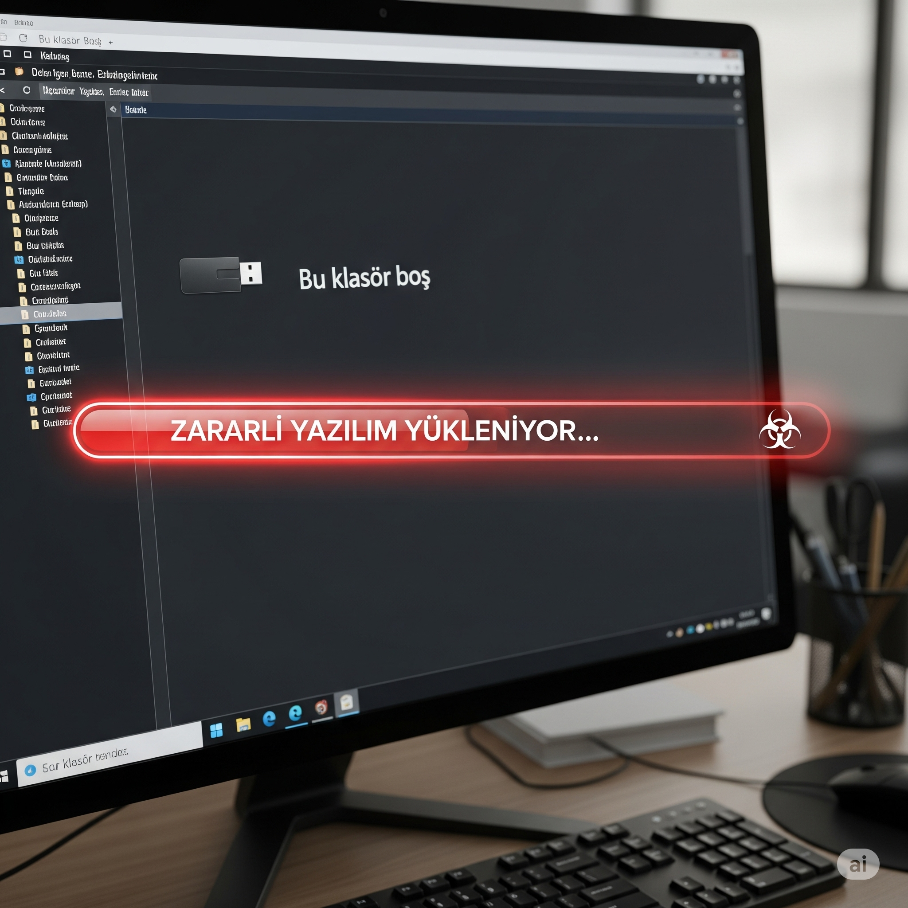

Bu simülasyonda, masum görünen bir USB belleğin şirketiniz için ne kadar büyük bir tehdit oluşturabileceğini deneyimleyeceksiniz. Merak ve iyi niyetin, siber güvenlikte nasıl risklere yol açabileceğini göreceksiniz. Vereceğiniz kararlar, tüm şirketin veri güvenliğini etkileyecek.
Temel Metrikler
Ağ GüvenliğiŞirket ağının dış tehditlere karşı bütünlüğü.
Zararlı Yazılım RiskiSisteme virüs bulaşma ihtimali.
Prosedür UyumuŞirket güvenlik politikalarına uyma düzeyiniz.
Veri Sızıntısı İhtimaliHassas verilerin çalınma olasılığı.
Ağ Güvenliği
100%
Zararlı Yazılım Riski
0
Prosedür Uyumu
100
Veri Sızıntısı
0%
Kalan Süre
10:00
Simülasyon Tamamlandı: Değerlendirme Raporu
Simülasyonu başarıyla tamamladınız. Fiziksel medya tehditlerine karşı verdiğiniz kararların analizi aşağıdadır.
Karar Zaman Tüneli
Çıkarılan Dersler
Puan Dökümü
Aşama 1: USB'nin Bulunması
Şirket otoparkında, arabanızın yanında yerde duran parlak renkli bir USB bellek gözünüze çarpıyor. Üzerindeki etikette el yazısıyla "Maaş Listesi - Güncel" yazdığını fark ediyorsunuz.
Ne yaparsınız?
Aşama 2: Merak Duygusu
USB belleği yanınıza aldınız ve masanıza koydunuz. Üzerindeki "Maaş Listesi" yazısı aklınızdan çıkmıyor. "Acaba kim ne kadar kazanıyor? Belki de benim maaşımda bir hata vardır. Sadece bir göz atmak kime ne zarar verebilir ki?" diye düşünüyorsunuz. Merak, en temel insani duygulardan biridir.

Merakınızla nasıl başa çıkarsınız?
Aşama 3: Bilgisayara Takma Riski
USB'yi bilgisayarınıza taktınız. "Bu Bilgisayar" penceresinde USB sürücüsü göründü ancak içine tıkladığınızda boş olduğunu fark ettiniz. "Herhalde bozuk" diye düşünürken, aslında arka planda siz farkında olmadan bir "otomatik çalıştırma" (autorun) betiği devreye girdi ve zararlı bir yazılım sisteminize sızmaya başladı.
USB'nin boş olduğunu gördüğünüzde ne yaparsınız?
Aşama 4: IT Soruşturması
Durumu IT departmanına bildirdiniz. IT uzmanı, olayın ciddiyetini anlamak için size soruyor: "Bu USB belleği tam olarak nerede ve yaklaşık olarak ne zaman buldunuz? Bu bilgi, kamera kayıtlarını incelememiz için kritik öneme sahip."
IT'nin bu sorusuna nasıl yanıt verirsiniz?
Aşama 5: Tehdidi Anlamak
IT uzmanı size teşekkür ettikten sonra bir açıklama yapıyor: "Bu tür USB'ler bazen 'badUSB' olarak bilinen özel cihazlar olabiliyor. İçinde dosya olmasa bile, bilgisayara takıldığında kendisini bir klavye gibi tanıtıp, saniyeler içinde yüzlerce komut çalıştırarak güvenlik sistemlerini aşabilir. Bu, kasıtlı ve profesyonel bir sızma girişimi olabilir."
Bu profesyonel saldırı tekniğini öğrendiğinizde tepkiniz ne olur?
Aşama 6: Kriz İletişimi
IT ekibi, verdiğiniz bilgiler sayesinde güvenlik kameralarını incelerken, başka katların koridorlarında ve mola alanlarında da benzer USB'lerin bulunduğunu ve bazı çalışanların bunları alıp odalarına götürdüğünü fark ediyor. Durumun aciliyeti nedeniyle hemen bir uyarı anonsu hazırlanması gerekiyor.
IT ekibi resmi duyuruyu hazırlarken siz nasıl bir aksiyon alırsınız?
Aşama 7: Artçı Saldırı
IT departmanının genel uyarısından bir saat sonra, tüm şirkete IT Direktörü adıyla yeni bir e-posta geliyor. E-postada, "Yaşanan USB olayı nedeniyle tüm bilgisayarların acilen bir güvenlik taramasından geçirilmesi gerekmektedir. Lütfen aşağıdaki linkten 'Acil Durum Güvenlik Tarayıcısı'nı indirip çalıştırın. Bu, ağımızı korumak için zorunludur." yazıyor. E-posta son derece resmi görünüyor.
Bu yeni ve kritik e-posta karşısında ne yaparsınız?